实际图像与冻结二维主体候选，包含错误/拒绝对应
绿色轮廓=观测Mask，橙椭圆=正式像素主体，白色=拉回源图表的冻结Body投影。GT仅用于仿真预测冻结后的候选误差诊断。所有代表帧固定为每视频第一个FIT，未按结果挑选。
首页与实际完整Mesh切面CORR_C0__E1__BODY_HIER__tol0.5_004.png
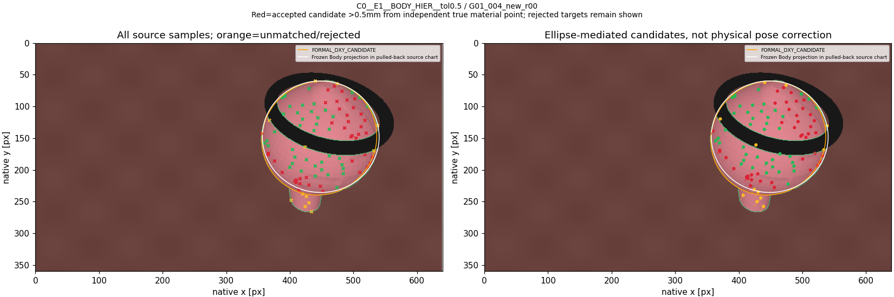
CORR_C0__E1__BODY_HIER__tol0.5_005.png
CORR_C4__E1__BODY_HIER__tol0.5_004.png
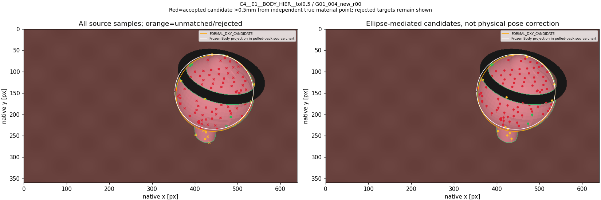
CORR_C4__E1__BODY_HIER__tol0.5_005.png
CORR_C6__E1__BODY_HIER__tol0.5_004.png
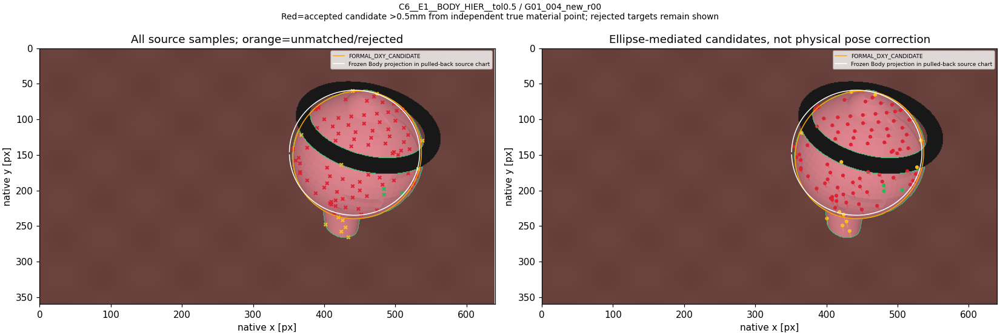
CORR_C6__E1__BODY_HIER__tol0.5_005.png
CORR_C7__E1__BODY_HIER__tol0.5_004.png
CORR_C7__E1__BODY_HIER__tol0.5_005.png
CORR_C7__E1__BODY_HIER_CTF__tol0.5_004.png
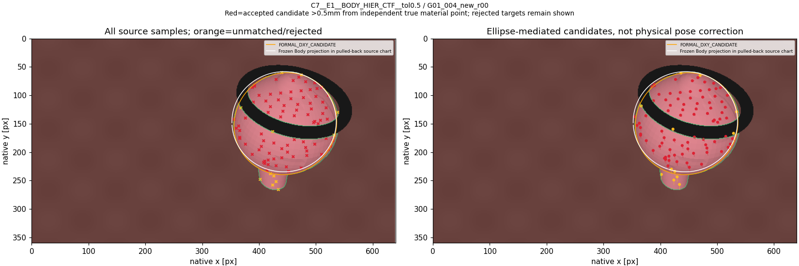
CORR_C7__E1__BODY_HIER_CTF__tol0.5_005.png
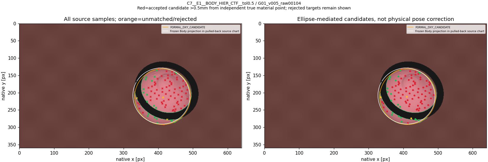
CORR_G01_004.png
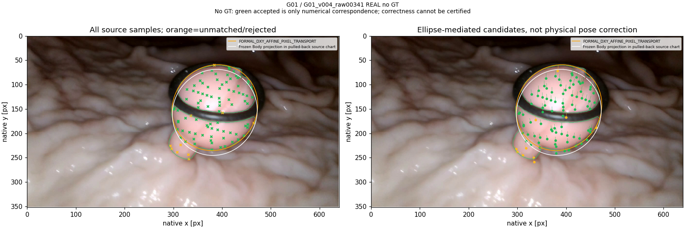
CORR_G01_005.png
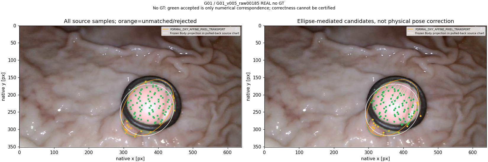
CORR_G03_004.png
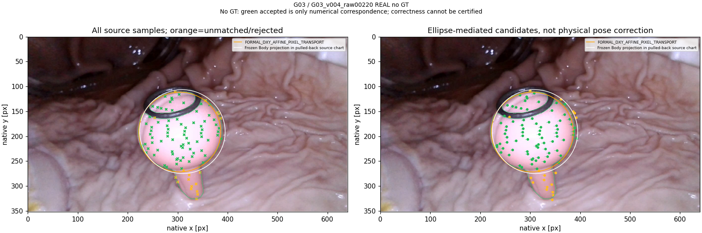
CORR_G03_005.png
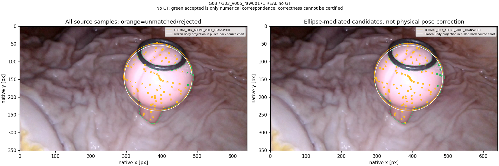
CORR_G05_004.png
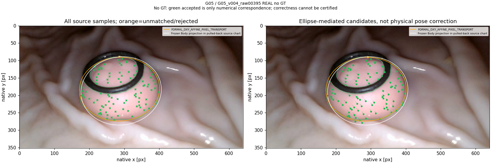
CORR_G05_005.png
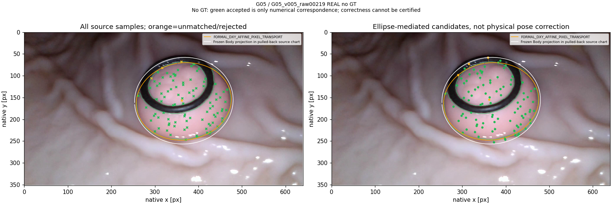
全部仿真候选/Face/重心/置信度/错误 · 真实拒绝/未匹配数量